| Min. | 1st Qu. | Median | Mean | 3rd Qu. | Max. | NA's |
|---|---|---|---|---|---|---|
| 0.07 | 0.5 | 0.64 | 0.66 | 0.86 | 1 | 331 |
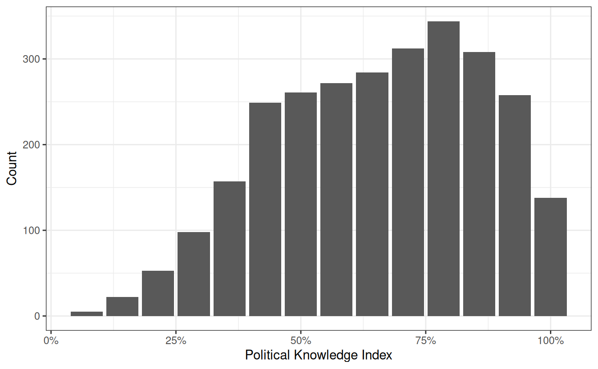
Introduction to Bivariate Analyses
Justin Leinaweaver (Spring 2026)
Americans’ Political Knowledge (Miller, Saunders & Farhart 2016)
Americans’ Political Knowledge (Miller, Saunders & Farhart 2016)
| Min. | 1st Qu. | Median | Mean | 3rd Qu. | Max. | NA's |
|---|---|---|---|---|---|---|
| 0.07 | 0.5 | 0.64 | 0.66 | 0.86 | 1 | 331 |

# Recode nominal variables into dummies
d$Majority_House2 <- if_else(d$Majority_House == "Republican Party", 1, 0)
d$More_Conservative2 <- if_else(d$More_Conservative == "Republican Party", 1, 0)
d$JRoberts_Job2 <- if_else(d$JRoberts_Job == "Chief Justice of the Supreme Court", 1, 0)
d$Pres_Russia2 <- if_else(d$Pres_Russia == "Vladimir Putin", 1, 0)
d$Speaker2 <- if_else(d$Speaker == "John Boehner", 1, 0)
d$JBiden_Job2 <- if_else(d$JBiden_Job == "Vice President of the United States", 1, 0)
d$DCameron_Job2 <- if_else(d$DCameron_Job == "Prime Minister of the United Kingdom", 1, 0)
d$Nominates_Judges2 <- if_else(d$Nominates_Judges == "The President", 1, 0)
d$Senate_Term2 <- if_else(d$Senate_Term == "6 years", 1, 0)
d$Reviews_Laws2 <- if_else(d$Reviews_Laws == "The Supreme Court", 1, 0)
d$Veto_Override2 <- if_else(d$Veto_Override == "2/3", 1, 0)
d$Sec_State2 <- if_else(d$Sec_State == "John Kerry", 1, 0)
d$Sec_Treasury2 <- if_else(d$Sec_Treasury == "Jacob Lew", 1, 0)
d$PM_Canada2 <- if_else(d$PM_Canada == "Stephen Harper", 1, 0)
d$knowledge_index <- d$Majority_House2 + d$More_Conservative2 + d$JRoberts_Job2 + d$Pres_Russia2 + d$Speaker2 + d$JBiden_Job2 + d$DCameron_Job2 + d$Nominates_Judges2 + d$Senate_Term2 + d$Reviews_Laws2 + d$Veto_Override2 + d$Sec_State2 + d$Sec_Treasury2 + d$PM_Canada2
# Rescale to proportion
d$knowledge_index2 <- d$knowledge_index / 14
summary(d$knowledge_index2)
ggplot(d, aes(x = knowledge_index2)) +
geom_bar() +
theme_bw() +
scale_x_continuous(labels = scales::percent_format()) +
labs(x = "Political Knowledge Index", y = "Count")Univariate Analyses
Bivariate Analyses


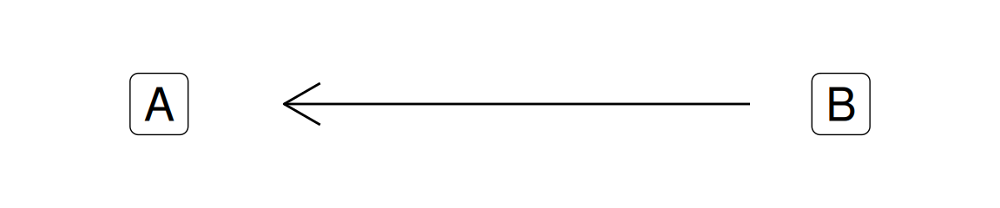
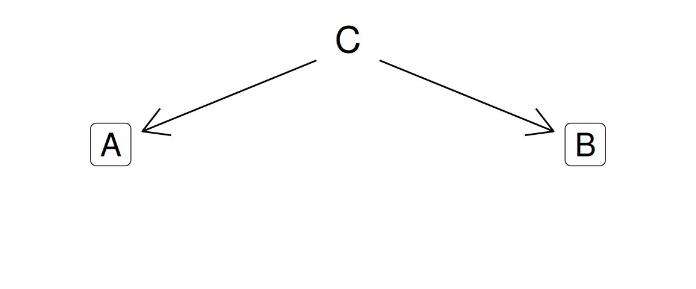
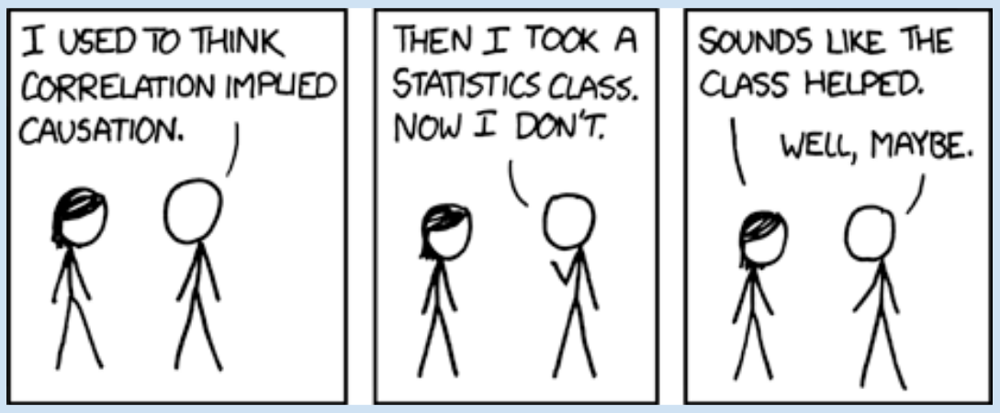
‘Directed’ = Paths indicate direction of effect
‘Acyclic’ = No immediate feedback loops
‘Graphs’ = Visualized
Generating Plausible Explanations
Inductive reasoning
Deductive reasoning
Why are these “bad” hypotheses?
In a comparison of individuals, some people pay more attention to political campaigns than do other people.
Democracies are not likely to wage war with each other.
Age and party affiliation are related.
Some people support increased federal funding for the arts.
What is the effect of increasing years of education on your salary earning potential?
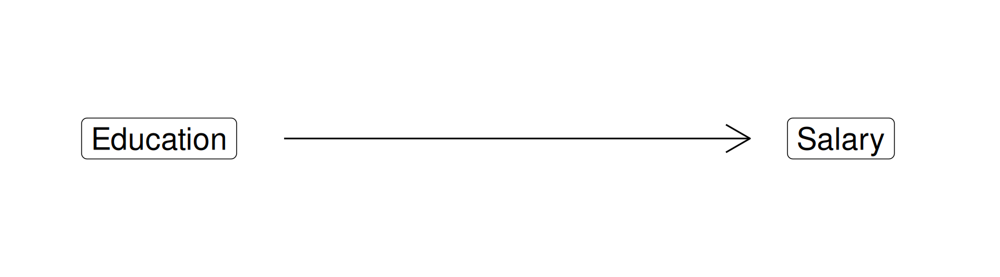
What is the effect of increasing years of education on your salary earning potential?
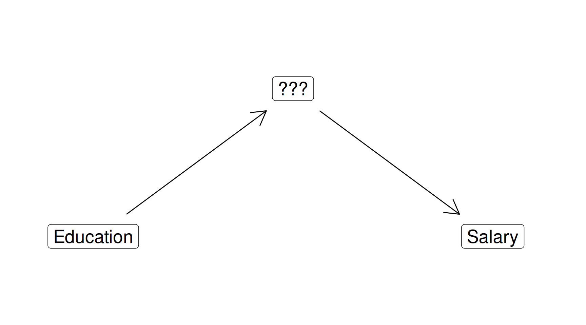
What is the effect of increasing years of education on your salary earning potential?
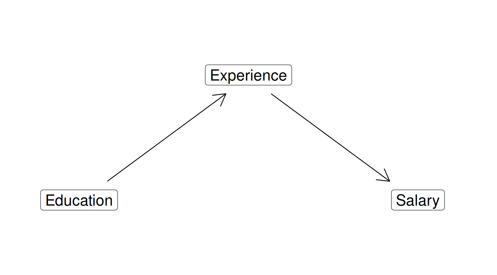
What is the effect of increasing years of education on your salary earning potential?
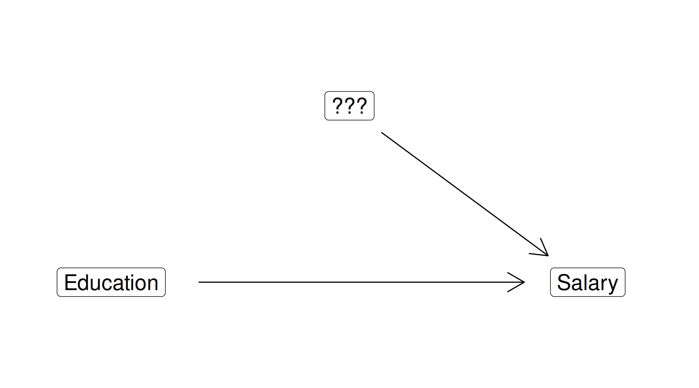
What is the effect of increasing years of education on your salary earning potential?
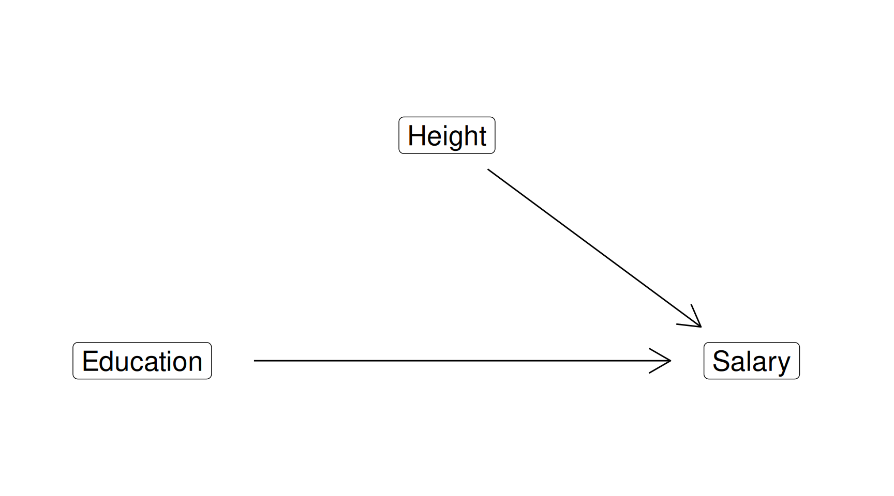
What is the effect of increasing years of education on your salary earning potential?
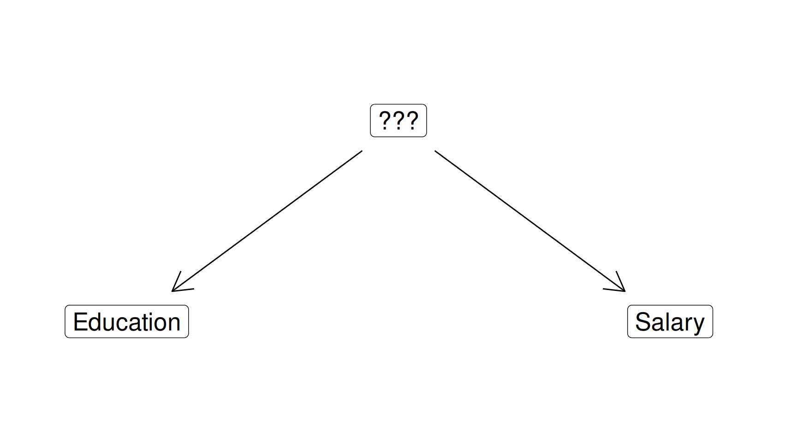
What is the effect of increasing years of education on your salary earning potential?
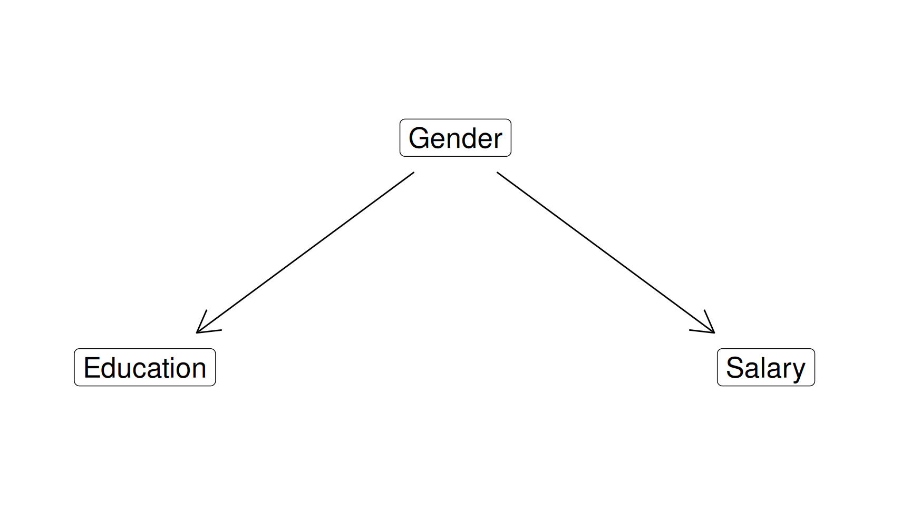
Data: Spring2026-WDI_Data_Class_Selections.xlsx
On the board illustrate each type of connection type using these variables (3 DAGs)
Finish Pollock and Edwards Chapter 4
Submit your answer to Exercise 6